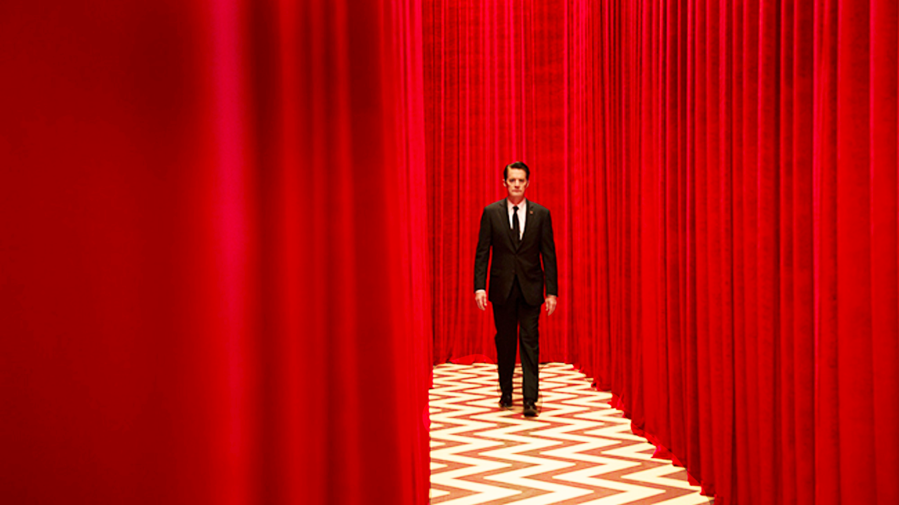
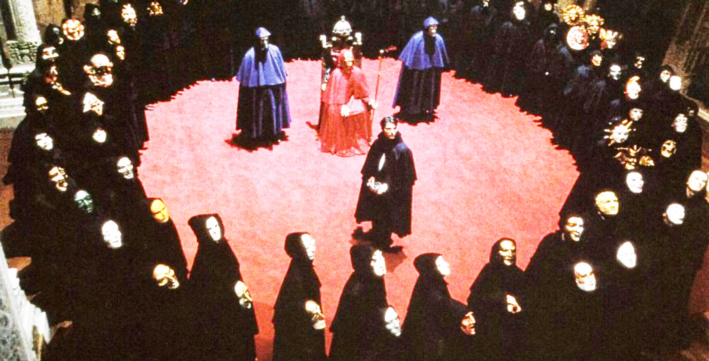

Techgnosis
by Erik Davis
Astral Glimmers
There was a peculiar feeling in the air those days, at least in my neck of the woods, an ambient sense of arcane possibility, cultural mutation, and delirious threat that, though it may have only reflected my youth, seemed to presage more epochal changes to come.

Recalling that vibe right now reminds me of the peculiar spell that fell across me and my crew during the brief reign of David Lynch’s Twin Peaks, which began broadcasting on ABC in the spring of 1990. Plunging down Lynch’s ominous apple-pie rabbit hole every week, we caught astral glimmers of the surreal disruptions on the horizon ahead.
I wrote an article in which I claimed that, in addition to dissolving the concentrated power of mass media, outlets like ABC, the onrushing proliferation of digital content channels and interactive media was going to savage “consensus reality” as well. It wasn’t just the technology that was going to change; the mass mind itself was, in an au courant bit of jargon from Deleuze and Guattari’s A Thousand Plateaus, going molecular. Molecular meant a thousand subcultures.
"Pockets of alternative practices across the spectrum crackled with millennialist intensity in the early nineties, as if achieving a kind of
Escape
Velocity.
Underground currents of electronic music, psychedelia, rap, ufology, cyberculture, paganism, industrial postpunk, performance art, conspiracy theory, fringe science, mock religion, and other more or less conscious reality hacks invaded the spaces of novelty and possibility that emerged in the cracks of the changing media.
Juxtapositions
As a journalist, as well as a heady seeker of sorts, I was already devoted to tracking the juxtaposition of spirituality and the material grit of popular culture, a juxtaposition that in the nineties came to include new technologies, human augmentation tech, and the dawning “space” of digital mediation.

Once I tuned into this techgnostic frequency, I realized that the waves radiated backward as well as forward. I became seized by the McLuhanesque conviction that the history of religion was really just a part of the history of media. I began to track these secret histories, and my notes grew until they demanded to be a book.
As I befriended technopagans or stumbled across cyborg passages in hermetic texts, I felt I no longer had choice in the matter. I was possessed by what Teilhard had called the “demon (or angel) of Research,” which is one way of describing what takes place when the object of study turns around and grabs you by the balls. I had to write TechGnosis
are you still paying attention?
Now streaming: Techgnosis